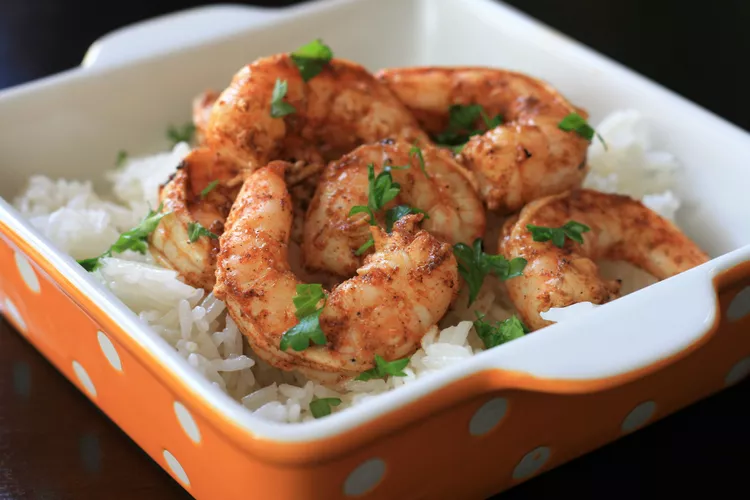

Spicy Lime Grilled Shrimp

Description
By combining heat from cajun seasoning with the zesty pop of lime, this grilled shrimp is sure to impress all who try it!
With less than five ingredients, this quick meal feeds eight people with less thana twenty minutes of cooking time.
Ingredients
- 3 tablespoons Cajun seasoning (such as Tony Chachere's or Old Bay)
- 1 lime, juiced
- tablespoon vegetable oil
- 1 pound peeled and deveined medium shrimp (30-40 per pound)
- cooked white rice
- minced cilatro (optional)
Steps
- Mix together Cajun seasoning, lime juice, and oil in a resealable plastic bag.
Add shrimp, coat with marinade, squeeze out excess air, and seal the bag.
Marinate in the refrigerator for 20 minutes.
- Preheat an outdoor grill for medium heat and lightly oil the grate.
- Remove shrimp from marinade; shake off excess. Discard remaining marinade.
- Cook shrimp on the preheated grill until bright pink on the outside and the meat is no longer transparent in the center, about 2 minutes per side.
- Serve over cooked white rice and top with cilantro.